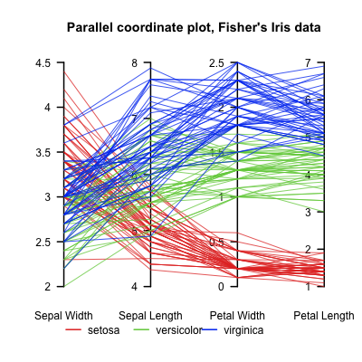

Independent Study Notes
lhelmreich cs website
Independent Study: Parallelizing Data Visualization
Semester Goal: Find an exisiting big data visualization and write it to process the data in parallel.
Week 1
Task: Explore what types of visualizations are out there, specifically looking at types of visualizations that were used for very large data sets. Also look to see to what extent data viz in parallel is already being worked on/if there is existing research that would be useful, and what tools are available for performing these operations in parallel for the web.
Result: Found several cool data visualizations out there (Glyphplots, Radar Charts, Arc Diagrams, Parallel Sets), but the one that seemed to be most used/had the most tools to support it was Parallel Coordinates. Because of the abundance of tools/software/libraries will the ability to generate parallel coordinates, I decided to use this as my visualization type.

When looking for existing research on this topic, I found a few existing researchers publishing work in this area (1, 2, 3). However these works are a bit beyond the scope/level of what I am trying to achieve with this course, so I'm not sure yet how useful they can be.
Finally, in looking for what is available out there in terms of writing in parallel for the web, the first thing I came across was Parallel.js which is a library for multi-core processing in Javascript. Assuming this works, using it would allow me to write the visualization in javascript/with the D3 library and also host it on the web, both benefits over the only other real alternative which seems to be OpenGL for C++.
Week 2
Task: Write a small script demonstrating that Parallel.js works as intended, and that I'll be able to use it for this project.
Result: I did successfully write a script using example code for calculating numbers in the fibonacci sequence found here. Running it on Chrome on my Mac, I found that the parallel version used all four cores of my Mac whereas the regular version used one. In addition, I saw about a 10 second difference in finishing time (the parallel version finishing faster).
However, there were also some issues. Running the same script on Firefox on Linux kept crashing the Firefox window before the script could finish executing. In additon, in my script a separate thread was opened for each number in the fibonnaci sequence I wanted to calculate. So with this script it wasn't clear whether you could perform a task combining the resulting work of the parallel processing.
Week 3
Task:
(1) Do research on the stability of Parallel.js (why wasn't it working in Firefox/Linux?)
(2) Try to locate some examples of existing projects that use Parallel.js successfully.
(3) Fix issues with previous week's script by writing another script using Parallel.js that adds numbers in different threads.
Result:
(1) According to the compatability chart provided at the bottom of the its README, Parallel.js is fairly behind in terms of compatibility. It only lists official compatability with Chrome v22.0-26.0 and Firefox v20.0-22.0. This news does not bode well as it would suggest Parallel.js is not being currently updated. My current Chrome browser is v48, and it did still seem to work. Due to unanticipated weather conditions, I haven't been able to access a computer on which to download earlier versions of Chrome and Firefox for personal testing.
(2) My efforts to find an example of software currently using Parallel.js were not successful. Everything I could find were articles on Parallel.js and how to use it, nothing that actually did. Furthermore, all these articles were dated around 2013.
(3) After finding these disheartening results about Parallel.js, and agian due to time restrictions because of the weather, while I began on writing another Parallel.js script, I did not finish this task.
*I do think it important to note that Web Workers, which Parallel.js is built on, is currently supported in the most recent versions of all major browsers. I thought this might be a good idea for what to use instead of Parallel.js, but I am not finding much in terms of using Web Workers to perform tasks in parallel.
Week 4
Task:
(1) Try to find evidence of speed issues in calculating Parallel Coordinates, or if none, another data visualization which is time intesive to calculate.
(2) Figure out what tools/software/languages to use in conjunction with C++ for project
Result:
(1) Struggled to find anything in reference to speed issues when it comes to Parallel Coordinates, or really in terms of any specific kind of data visualization.
(2) There appear to be three major options if the goal is to use C++ with the web. None of them really had anything that specifically talked about parallelism capabilities with these tools, so that's still up in the air a bit.
-
WebToolKit's Wt, a C++ library for developing web applications. Not too many examples of people using this, but they do exist. It seems like it's probably capable of using d3/javascript in conjunction with this, or there are C++ visualization libraries that can definitely be used. Client-side responsiveness is questionable.
-
Cheerp, which is a C++ compiler for the web and will translate C++ code to optimized javascript. I don't this this would work well given that javascript doesn't do parallel, so I don't know how/if that would translate.
-
C++ Module for Node.js. Node.js has the ability to import C++ modules in order to boost performance. Those C++ modules can use their own libraries and everything so presumably writing the C++ code in parallel is doable. Could also probably use this with sever-side pre-rendered d3 to improve speed.
To use C++ without a web component is also possible, there is XDAT which is a free tool for download written in java. You can also make charts using R, which is integratable with C++ through RCPP. The downside to these options is of course a lack of responsiveness to the visualization, and the fact that it won't be available then on the web.
Week 5
Task:
(1) Setup a web application that will be able to connect to C++ code
Result:
I needed to make an app with a Node.js backend, so that I would be able to import C++ code as an addon module. To that end, I made an Express app because I have used Express before and the Express generator will initialize the skeleton structure of your app for you. After a bunch of mucking around, I setup a simple page that connects to javascript code that randomly generates a colored square using javascript, d3, and jQuery.
Once I had this running, it took a lot of googling about modules and C++ addons specifically, but I finally came across some tutorials (1, 2) that helped me setup a simple hello world C++ module, compile it, and use it within my app. At first I was having compile issues, but I realized that the code I used was out-of-sync with the node version I'm running, so I updated the code and this problem was solved.
Here are some screenshots of the relevant code in my express app:
The route to the Index view: when a user navigates to "/" on app it sends them to the index jade file through here. It passes the parameters "title" which is hard coded as "Colors", and cppOutput, which passes the result of calling our C++ module's hello function. Notice we require the module at the top of the file so that we can use it's methods.

The index Jade layout. The "Colors" we passed as the title gets filled in line 4, and the cppOutput goes in line 5. Below is the #svgContainer which we manipulate with the javascript.
The layout that all Jade pages extend from (this is where js links go). GlobalJS is the js file I wrote which deals with the #svgContainer on the homepage.
The javascript which handles the color changing square. We add a square to #svgContainer and then on click randomly change it's color with the get_random_color() function.
This is the cpp addon module (and it's associated files in the directory structure). The "build" subdirectory is created as a result of compiling the code using node-gyp.
Finally, this is what the user sees upon loading the application. Note that "world" is what the cpphello method hello() returns, which is why it's filled in as the cppOutput parameter we passed.
I was having sftp issues with copying entire directories, so I wasn't able to get the app up onto the cs.wheaton server yet, but the code for running it locally is in the github repo for this project. A screenshot of the webpage is below ("world" is being generated by a C++ module hellocpp.hello() function in the app). In addition, the C++ code I wrote isn't complicated because I didn't have enough time this week to start learning the ins and outs of the V8 Javascript library, which you need in order to link C++ code to Node.js.
Week 6
Task:
(1) Host application on the server
(2) Get data walking back and forther client=>server=>C++=>server=>client CHECK
(3) Try C++ addon using threading (ex: sum up numbers)
Result:
(1) As of now, this isn't done yet. Still running application locally.
(2) I wrote a one line form in which the user submits a number. This value is then passed to the cpphello.foo() function I created which takes that number and returns 2*number. This is then passed to the jade view which renders it.
Here's the image of the user interface. The user entered the number 332, and 664 was returned. Below is the foo method in the C++ addon, next to the line where this method, in the C++ addon called "Yo" get's renamed to "foo" which is what I call it when I use the method in the app.
(3) First I made a method which executes one thread. The string "Hello" is passed to the thread, where the first character is then switched to "a". Then, once the thread finishes, the main function returns to the application this string "aello." Below we see the application where the result of this function has been passed to the client. Under that is the corresponding code in the addon. Note that not shown is the fact that you need to include the libraries pthread.h and unistd.h for the threading.
I then made a method which executes two threads to sum the odd integers from one to a number, that number being the same one submitted by the user through the form for the times 2 method earlier. The code for this is shown below. I copy-pasted it from here.
Week 7
Direction of Project Update: At this point in time, there were two ways to go with the project. One route would be to do any kind of data visualization (like parallel coordinates), but provide it with a LOT of data which would be where the parallization comes in. The second route would be to work on a clustering problem, where a lot of calculations would be required (where the parallelization comes in) and then make a visualization of the clustering.
The second route seemed the more challenging of the two, so that's the one we went with. So there are then two problems to tackle, (1) calculating the clusters, and (2) visualizing the clusters.
Professor Gousie already has done work with clustering using a dataset of popular celebrities through the years (this work can be found here) and this dataset will be what I use moving forward.
Task/Results:
This week was Spring Break, and the start of a new vein in the project, so I didn't assign myself any concrete tasks to complete or tackle. I familiarized myself with the Celebrity Dataset that I will be working with by looking at the various xml/excel data files provided by Professor Gousie (these can be located in the Celebrity Data Work folder). I did some reading on kinds of clustering and found an XML parser for C++ that I've started to implement.
For next week I'd like to be able to read the XML data into C++ in a workable format, and figure out (or starting thinking about at least) what kind of data structure the data will need to be stored in in order to perform the necessary clustering calculations.
Week 8
Task:
(1) Write code to import actor data to C++.
(2) Figure out what data structure to use for clustering calculations.
Results:
I wrote C++ code using this XML parser that imports the actor XML data into C++. The actor data is unique in that it's broken up among different XML files, so I had to write specific functions for these. Below is the function which gets the actor key and name from one XML file, then maps the key to an actor object containing information about the actor that's looked up in another XML file.
Ideally this project will allow users to upload their own XML. The code for this however will be a different set of functions, because we will have standardized guildlines for how the XML should be formatted. This way we can generalize the code for all XML files structured in a certain way. This will integrate with the user interface end.
In terms of what data structure to use, my current idea is to use a map. The map will go from key -> an object, which will contain the name of the object, and a vector which holds all the attributes we'd want to cluster by. Then, to perform clustering, we'd first have the user state which attributes to include in the clustering. When calculating distances, we'd only look at/calculate into the distance the indices in the vector which correspond to the chosen attributes. This way we won't have to regenerate a new vector for each configuration of attributes.
Weeks 9/10
Task:
(1) Write clustering class
(2) Implement threading
Results:
I wrote the cluster class and implemented my own version of the algorithm with a sequential version of the iterations and a parallel version which does the distance calculations in parallel with two threads. I saw an few available kmeans implementations available online, however none of these offered the ability to import data from an XML file, nor the flexibility to choose which dimensions of a data point to include in calculations. I specifically want these to be user-specified parameters, as the idea is to allow a user to upload their own XML online and see the resulting cluster visualization.